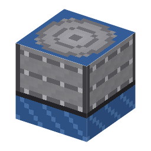

①子ども ガス灯の時代のガスタンクは、水でふたをして（水封）ガスがもれないようにしていた。
③大人 1812年設立のロンドンのガス会社（ガス・ライト・アンド・コーク社）は、石炭ガスを水封式のガスホルダーに貯めて街灯に配った。巨大な円筒形の鉄骨枠は今もロンドンのキングス・クロスなどに残り、公園や集合住宅として再利用されている。
④ガチ ガスの圧力＝ベルの重さ÷ベルの断面積（数kPa、大気圧の数%増し程度）。だから圧縮機なしで貯められるが、体積は大きいまま。小さく押し縮めて持ち運ぶのは[6-03]圧縮機とボンベ。水素は分子が小さく金属のすき間からも少しずつ逃げ、水封の水にも少し溶ける（ゲームでは省略）。
（このアイテムを使うレシピは無い）